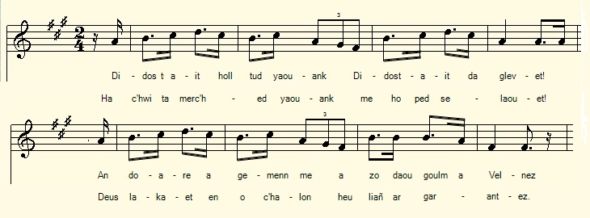

An div goulm
Les deux tourtereaux
The two lovebirds
Chant collecté par Théodore Hersart de La Villemarqué
dans le 2ème Carnet de Keransquer (pp. 77-79).

Dañs Fisel: kan ha diskan ton simpl "An daou bichon"
Arrangement Christian Souchon (c) 2020
|
A propos de la mélodie Le texte noté par La Villemarqué sous le titre "An daou goulm" que l'on doit corriger en "An div goulm" est un chant de danse bien connu, souvent interprêté en duo en utilisant le système de tuilage (recouvrement partiel des deux voix) appelé "kan ha diskan". Les phrases musicales sont d'une longueur invariable, 8 mesures. Cette formule est dite "ton simpl". La mélodie ci-dessus est chantée par les Soeurs Goadec dans l'album "Moueziou Bruded a Vreiz" sorti en 1990. Cette gavotte est donnée comme étant une "Dañs Fisel". A propos du texte Un jeune homme invite une fille à parler mariage. « Jusquà présent jai vécu sans souci, je ne sais que vous répondre. Il me faut demander lautorisation de mon père. Donnez-moi une échéance et je vous resterai à vous fréquenter. » La fille impose douze ans! (Dans cette version tout au moins). Malgré ses promesses, le garçon a tôt fait de dénicher une autre fiancée moins inaccessible... La page du site de Serge Nicolas et Thierry Rouaud, (http://follenn.chez.com/khd.html) intitulée "Kan ha diskan et feuilles volantes" cite une version de ce chant, publiée sur une feuille volante dont le titre est "An daou bichon yaouank", Les deux tourtereaux. Plus exactement le titre complet est "Chanson nevez composet var sujet an daou bichon yaouank (Chanson nouvelle composée au sujet de deux jeunes pigeons). 36 couplets de 2 vers à 13 pieds, à chanter "voar un ton nevez". Il est suivi du nom d'Yves Guillermic (1844-1907). MM. Nicolas et Rouaud se demandent s'il s'agit de l'auteur du chant, la feuille ne portant pas de nom d'éditeur. Ce qui est certain, c'est que dès 1840 ou 1841, La Villemarqué avait déja collecté un texte en tout point similaire: 23 couplets de 2 vers à 13 pieds. |
About the tune The text noted by La Villemarqué under the title "An daou goulm" which should be amended as "An div goulm" is a well-known dance song, often performed in duet with overlapping of the two voices known as "kan ha diskan". The musical phrases are invariable in length, 8 measures. This formula is called "Ton simpl". The above melody was sung by the Goadec Sisters for the CD "Moueziou Bruded a Vreiz" released in 1990. The rhythm is described as that of a "Dañs Fisel". About the lyrics: A young man prompts a girl to discuss marriage. "- So far I have lived without worry, I wonder what to answer. I need to ask my father's permission. - Give me a deadline and I will stay with you. " The girl imposes twelve years! (In this version at least). Despite his promises, the boy soon finds another less inaccessible fiancée ... The page of the site of Serge Nicolas and Thierry Rouaud (http://follenn.chez.com/khd.html) entitled "Kan ha diskan and broadside sheets" quotes a version of this song, published on a broadside sheet whose title is "An daou bichon yaouank", The two lovebirds. More exactly the full title is "Song nevez composet var subject an daou bichon yaouank (A new song composed about two young lovebirds). 36 stanzas consisting in as many pairs of 13 feet verses, to be sung "voar un ton nevez" (to a new tune). The title is followed by the name of Yves Guillermic (1844-1907). The editors wonder if he is meant to be the author of the song, since the sheet bears no publisher's name. Anyway it appears that, as early as 1840 or 1841, La Villemarqué had already collected a text that was in every respect similar to it: 23 thirteen feet distiches . |
|
BREZHONEK p. 77 / 40 An div goulm [1] 1. Didostait holl tud yaouank, didostait da glevet Ha chwi-ta merc'hed yaouank, me ho ped, selaouet, An doare a gemenn-me war-benn daou goulm a Velnez [2] 'Deus lakaet en o chalon heuliañ ar garantez. 2. 'Deus lakaet en o spered da 'n-em garout o-daou. A wir galon a c'hoante (en o chalon) ma vije priejoù. Hag ar c'hentañ prederi a oa bet etreze, Oa dar pardon ar Yeodet, d'an eil zul a vis Mae. 3. Ha bewech m'en-em welfent an div goulmik-gont Hag o-deus 'n-em saludet gant ur galonik koant. Ouzhpenn hanter-kant ur-wech, heb laret ur ger gaou Ez int bet war ar gludenn, o divizout o-daou, 4. 'Dalek ma 'zave an heol, betek an abardaez A brezege n ur feson dimeus o c'harantez. Un devezh ar gwaz monet hag a laret dezhi: - Me am-eus choant, ma mestrez, er bloazh-mañ da zim(ez)iñ. p. 78 5. Mes me fell din gout bremañ, ha me a zo dho kra(taa)t, En tu me da dri bloavezh d'ober ho avantur-vad. - Ar plach a huanade, a zell och traoñ, och trec'h: - Betek amañ, em-eus bevet, dinech, 6. Betek amañ, em-eus bevet, joaus amañ, Mes dimeziñ er bloaz-mañ n'eo ket evel ma choant. - - Mar n'eo ket en ho kalon, dimeziñ er bloaz-mañ Chwi laro din an termen ha me chortozo an(ezh)añ, 7. Chwi lako din ur bloavezh, lakait daou mar keret Ha me chortozo an termen ho-pezo din lakaet. - - Dimeus ar berrañ termen ouifen da lakaat deoch, En tu-mañ da zaouzek vloaz me na zimin ket deoch, 8. En tu-mañ da zaouzek vloaz me na zime(z)in ket, [3] Gwir eo ar pezh a laran, va chrediñ a c'hellet. Ha choazh a renkan kaout kimiat ma mam, ma zad. - Chom 'keit-se e porneant [4] a galv un dra bennak. 79 / 41 9. Me na zellan, ma mestrez, dimeus youl ho tad, Mes me chortozo an termen a zo bet lakaet, Ni a ziverray an amzer ur bloavezh bep triz(ek) miz Ha ni 'n-em zarempredo bepret en onestiz. 10. - 'N ait ket, ma zervicher, da ziverrad an termen! An tu-mañ da zaouzek bloaz, me chomo evel-henn, An tu-mañ da zaouzek bloaz, me na zimezin ket, An tu-mañ da zaouzek bloaz, ma c'hediñ a hellet. - 11. - Kenavo-ta, ma mestrez, vit ar wech diwezhañ! Chwi 'cheuz lakaet va chalon war ar poent da rannañ. Chwi 'cheuz lakaet ac'hanon, e-pad seizh bloaz zo, Kazi evel da rannañ, adieu-ta kenavo! - 12. 'Benn un, daou pe dri bloavezh pe a-hend-all pelloch, Eñ a choazas ur vestrez a blije de(zh)añ gwelloch, Eñ choazas ur vestrez all, a blije dezhañ gwelloc'h Eñ choazas ur vestrez. all, a blije dezhañ gwelloc'h. il ne comprenait pas [5] KLT gant Christian Souchon |
TRADUCTION FRANCAISE p. 77 / 40 Les deux tourtereaux 1. Venez donc à moi, jeunes gens, venez, prêtez l'oreille, Et vous aussi, je vous en prie, les jeunes demoiselles Cette chanson de ma façon parle de deux colombes De Brelevenez qui voulaient s'aimer jusqu'à la tombe. 2. L'amour c'était ce que ces deux-là s'étaient mis en tête Mais l'amour vrai veut que l'on se marie, point de "peut-être". Depuis le deuxième dimanche de mai l'on y pense Un jour de pardon au Yaudet: voilà les circonstances. 3. A chaque fois qu'ils se voyaient, ces oiseaux de la fable, Leurs deux coeurs, quand ils se saluaient, battaient la chamade, Plus de cinquante fois, mais oui, sans dire de mensonge On put les voir sur leur perchoir roucouler comme en songe 4. Depuis le lever du soleil et jusque au crépuscule, L'amour leur faisait la leçon sous sa douce férule. Mais un beau jour le prétendant a dit à sa maitresse: - Je vous supplie, qu'on nous marie avant la saint-Sylvestre! p. 78 5. Il faut bien que je sache enfin, si c'est moi que l'on aime, Trois ans bientôt que je fais la cour. C'est long tout de même - Mais voici que la belle au ciel lève les yeux, soupire - Je n'eus de soucis jusqu'ici, je tiens à vous le dire. 6. Jusqu'à présent mon existence s'écoulait heureuse. Mais me marier cette année? Quelle pensée affreuse! - Si votre coeur répugne au mariage cette année. Fixez une limite: j'attendrai son arrivée. 7. Dois-je patienter une année, ou deux années peut-être? J'observerai le terme où qu'il vous plaira de le mettre. - Je veux imposer le délai le plus court qui se puisse, Mais ne veux pas qu'avant douze ans un hymen nous unisse. 8. Je ne me marierai pas avant les douze ans qui viennent, Pour sûr! Il n'est de plus sûre parole que la mienne! Car je veux quitter mes parents en bonne intelligence. - Mais ainsi demeurer en vain exige récompense! 79 / 41 9. Je tâcherai que tout soit fait pour plaire à votre père Et j'attendrai le temps que l'on m'impose sans rien faire. Chaque treizième mois marquera l'an de plus qui passe... En tout bien tout honneur, continuons de nous voir de grâce! 10. - Ne cherchez pas, mon prétendant, à racourcir le terme! Tout le temps des fameux douze ans, je vous serai fidèle, Oui, d'ici-là je ne veux pas contracter mariage, Vous pourrez me guetter, mais il conviendra d'être sage. -... 11. - Pour la dernière fois je vous dis "adieu", ma maîtresse, Mon coeur, c'est sûr, éclatera, vous l'avez mis en pièces Sept ans se sont passés déjà. Ah, que de maux j'endure! Disons-nous adieu, c'est bien mieux! Finie notre aventure! - 12. Un ou deux ans, peut-être trois passent. Notre rebelle Avait jeté son dévolu sur une touterelle Qui sut lui plaire bien plus que son ancienne maîtresse Et il eut tôt fait d'oublier l'exigeante traîtresse. Il ne comprenait pas Traduction: Christian Souchon (c) 2020 |
ENGLISH TRANSLATION p. 77 / 40 The two lovebirds 1. Approach, young boys, approach to hear, And you young girls, please listen To the air that I composed on two lovebirds of Melnez Who allowed love to rule their hearts. 2. These two had decided to love each other. They truly wanted to be considered affianced to each other And the first interview that they had together Was at Yaudet's "pardon", the second Sunday in May. 3. And whenever these two lovebirds saw And greeted each other, with their hearts full of joy, Over fifty times, without saying a lie, They stood apart to chat together. 4. From sunrise to evening They were exploring the map of tenderness. One day the boy happened to say to the girl: - My desire, darling, is to marry you this year. p. 78 5. And I want to know right now if I am approved by you Whom I've been courting for almost three years. - The girl sighed, looking up and then looking down: - Up to now all sorrow had been spared me, 6. Until now, I have only experienced joy. But getting married this year is not what I want. - - If you cannot make up your mind to marry this year, Please set me a deadline and I will respect it. 7. Will you give me a year. Give me two, if you want? And I will wait as long as you decide. - - Considering the shortest time that I can impose on you, I will not marry you in less than twelve years, 8. In less than twelve years I will not marry you. It's true what I say. You can believe me. Besides I need the agreement of my father and my mother. - Letting all this time the question in abeyance deserves a reward 79 / 41 9. I don't look on things, darling, the way your father does, But I will respect the deadline imposed on me. We will see the time shorten by one year, every thirteenth month And we'll go on seeing each other, observing the proprieties. 10. Be not so bold, my dear, as to try to shorten the time! In the next twelve years, I will wait the same way. In the next twelve years, I will not marry. In the next twelve years you can ask to meet me. - 11. - Farewell, my mistress, and for the last time! You are blowing my heart to smithereens. You've been at that for seven years. I am crushed, annihilated. Farewell then, farewell! 12. After one, two or three years, or a little more. He chose a lover who pleased him more. He chose a lover who pleased him more. He chose a lover who pleased him more ... He did not understand. |
NOTES:
|
[1] Div goulm: (deux colombes). Sur le manuscrit on lit distinctement "daou goulm", grammaticalement inexact. Le chant est généralement connu sous le titre "An daou bichon". Le mot "pichon" 'emprunté au français "pigeon" désigne plus généralement un "oiseau". [2] Velnez: est la forme mutée d'un toponyme qui pourrait être "Belnez" ou "Melnez". La localité visée doit être proche du Yaudet dont on parle à la strophe suivante. Le choix de (Bre)levenez), quartier de Lannion dans la traduction est cependant plutôt arbitraire. Une version cornouaillaise parle du Releg: "An añtretien kentañ a oa bet etreze / Oa da bardon Ar Releg e-barzh eskopti Kerne" = "Le premier entretien qu'ils eurent / Fut lors du Pardon du Releg dans le diocèse de Cornouaille". [3] Daouzek vloaz: douze ans. D'autres versions placent la barre beaucoup moins haut et parlent de trois ans ou de douze mois. [4] Porneant: mot inconnu. Sans doute faut-il comprendre "pour néant", "pour rien", "en vain". La mention du père et de la mère explique que le prétendant considère, à la strophe 9 que c'est le père qui fixe ces terribles conditions, même si le reste du texte suggère que c'est l'indécision de la jeune fille qui en est la cause. [5] "Il ne comprenait pas". Dans cette phrase en français, le "il" désigne peut-être le chanteur qui répète trois fois le même vers, sans doute dérouté par la curieuse logique qui préside à cette histoire. On ne saisit pas, entre autre, au bout de combien d'années se produisit l'inéluctable rupture. | .
[1] Div goulm: (two doves). On the manuscript we read distinctly the grammatically inaccurate phrase "daou goulm". The song is generally known as "An daou bichon". The word "pichon" 'borrowed from the French "pigeon" more generally means a "bird". [2] Velnez: is the mutated form of a toponym which could be "Belnez" or "Melnez". The locality referred to should be close to Le Yaudet, which is addressed in the next stanza. The choice of (Bre)levenez), a Lannion district, in the French translation is however rather arbitrary. A Quimper area version mentions Le Releg: "An añtretien kentañ a oa bet etreze / Oa da bardon Ar Releg e-barzh eskopti Kerne" = "The first interview they had / Was during the Pardon of Releg in the diocese of Cornouaille". [3] Daouzek vloaz: twelve years. Other versions are less demanding and mention a three year or twelve month deadline. [4] Porneant: an unknown word. Maybe we are to understand it as "for nothing", "in vain". The mention of the girl's father and mother in this stanza prompts the pretender to surmise, in stanza 9, that it is the father who imposes these terrible conditions, even if the rest of the text suggests that it is the indecisive girl . [5] "He didn't understand". In this hint in French, "he" perhaps refers to the singer who repeats the same verse three times, as he is possibly confused by the curious logic that presides over this story. Among other things, it is not clear after how many years the inevitable rupture occurred. |